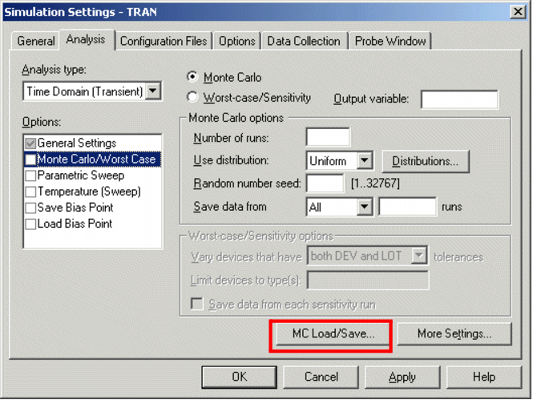
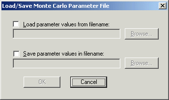
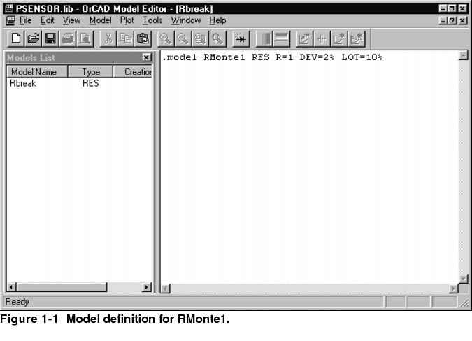
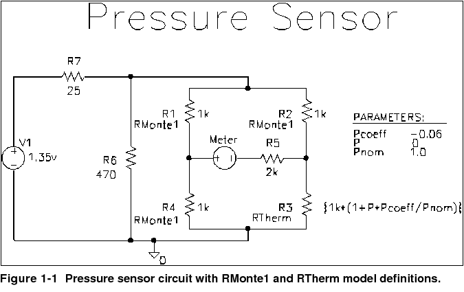

|
|
|||||||||
|
|
|
|
|
|
|
|
|
|
|
This chapter describes how to set up Monte Carlo and sensitivity/ worst-case analyses and includes the following sections:
Monte Carlo and sensitivity/ worst-case are statistical analyses. This section describes information common to both types of analyses.
See Monte Carlo analysis for information specific to Monte Carlo analyses, and see Worst-case analysis for information specific to sensitivity/ worst-case analyses.
The Monte Carlo and worst-case analyses vary the lot or device tolerances of devices between multiple runs of an analysis (DC, AC, or transient). Before running the analysis, you must set up the model and/or lot tolerances of the model parameter to be investigated.
A Monte Carlo analysis performs a Monte Carlo (statistical) analysis of the circuit. A worst-case analysis performs a sensitivity and worst-case analysis of the circuit.
Sensitivity/ worst-case analyses are different from Monte Carlo analyses in that they compute the parameters using the sensitivity data rather than using random numbers.
You can run either a Monte Carlo or a worst-case analysis, but you cannot run both at the same time. Multiple runs of the selected analysis are done while parameters are varied. You can select only one analysis type (AC, DC, or transient) per run. The selected analysis is repeated in subsequent passes of the analysis.
As the number of Monte Carlo or worst-case runs increases, simulation takes longer and the data file gets larger. Large data files may be slow to open and slow to draw traces.
One way to work around this is to set up an overnight batch job to run the simulation and execute commands. You can even set up the batch job to produce a series of plots on paper to be ready for you in the morning.
Monte Carlo and sensitivity/ worst-case analyses generate the following types of reports:

|
Model parameter values used for each run (that is, the values with tolerances applied) |
|
|
Waveforms from each run, as a function of specifying data collection, or by specifying output variables in the analysis set up |
Output is saved to the data file for use by the waveform analyzer. For Monte Carlo analyses, you can use the performance analysis feature to produce histograms of derived data. For information about performance analysis, see RLC filter example. For information about histograms, see Creating histograms.
To produce a list of the model parameters actually used for each run,
This list is written to the simulation output file at the beginning of the run and contains the parameters for each device, as opposed to the parameters for each .MODEL statement. This is because devices can have different parameter values when using a model statement containing a DEV tolerance.
Note that for midsize and large circuits, the List option can produce a large output file.
Using the history support feature of Monte Carlo, you can store the model parameter values used for each Monte Carlo run, in a separate file, and later reuse these values.
For every Monte Carlo run, the model parameter values are generated randomly with in the tolerance range specified by you. With the history support feature, you can save these randomly generated values and reuse exactly the same values in the next analysis.
The Monte Carlo history support feature allows you to compare the results of two Monte Carlo analyses by manually changing only one or more parameter values. For comparison between simulations, the random numbers have to remain the same for the toleranced model parameters and this can be achieved using the Monte carlo history support feature.
To enable saving of the randomly generated model parameter values:
|
|
|
Select PSpice > Edit Simulation Profile. |

|
|
|
In the Load/Save Monte Carlo Parameter File dialog box, select the Save parameter values in filename: check box. |

|
|
|
In the text box that is enabled, specify the name and the location of the file in which the parameter data is to be saved. |
If you now run the Monte Carlo analysis, the model parameter values used for various simulation runs will be stored in the .mcp file specified by you.
To reuse model parameter values from a previous Monte Carlo analysis:
|
|
|
Select PSpice > Edit Simulation Profile. |
|
|
|
In the Load/Save Monte Carlo Parameter File dialog box, select the Load parameter values in filename: check box. |
|
|
|
In the text box that is enabled, specify the name and the location of the .mcp file from which the parameter data is to be read. |
Now when you run the Monte Carlo analysis, the simulator will reuse all the model parameter values stored in the .mcp files. Any new or additional parameter values will be varied separately with in the tolerance range.
While reusing values from a .mcp file, you must take care of the points listed below.
|
|
When you use the Monte Carlo history support feature, the values stored in a .mcp file for model parameters are different from the values stored for components, such as resistor, capacitor, and inductor. In case of model parameters, actual parameter values used for simulation are stored. Whereas in case of the components, instead of the actual value, the multiplication factor used for generating the random values are stored. |
Table 13-1 lists down the actual entries recorded in a .mcp file for a model parameter and a resistor.
|
For a model parameter: |
For a resistor: |
The difference in the method used for storing values from previous Monte Carlo runs, is highlighted when you change the original value of a parameter and also choose to reuse the values from a previous Monte Carlo run.
For example, if you change the original base value of a model parameter from 100 to 50 and reuse the values from an .mcp file, the simulation results will be based on the original parameter value, which is 100. Whereas, in case you change the value of a resistor from 100to 10, and reuse the values from a .mcp file, simulation results will be based on the changed value of 10
.
|
|
If the number of Monte Carlo runs is greater than the number of values in the .mcp file, PSpice simulator with first reuse all the values from the .mcp file and then for rest of the runs, the random values will be generated using the base value and the tolerance defined for the parameter in the schematic. |
For example, consider that for a particular model parameter, the .mcp file from which the parameter data is to be read has 10 entries, but for the current simulation, 20 Monte Carlo runs are required. In such cases, for the first 10 Monte Carlo runs the values will be read from the .mcp file. For the last 10 runs, the simulator will calculate the values using the base value of the model parameter and the tolerance specified on it.
When you use the Monte Carlo history support feature, you either generate a Monte Carlo Parameter (.mcp) file or use parameters from a .mcp file. A .mcp file is a text file that stores the parameter information generated during Monte Carlo analysis. The data is stored in a tabular format with the data values separated by white spaces, blanks, or tabs. Each columns in a .mcp file indicates a parameter whose values was varied during the Monte Carlo analysis.
The format for a .mcp file is shown below:
In a .mcp file, the name of the variable parameter is defined using the following format:
|
reference designator or the name that appears in the PSpice netlist |
|
|
indicates whether the component is a resistor, capacitor, transistor, and so on. |
For example, if the name of the variable parameter is R_U2_R2::R, R_U2_R2 is the reference designator and R indicates the parameter name, which in this case is a resistor.
A sample .mcp file that has three parameters values varied is shown below.
For Monte Carlo analyses, there are five variations of the output that you can specify in the Save data from text box on the Monte Carlo dialog box. Options:
|
Forces all output to be generated (including nominal run) |
|
|
Generates output for every nth run |
|
|
Does specified analysis and generates outputs only for the listed runs (up to 25 values can be specified in the list) |
The * indicates that you can set the number of runs in the runs text box.
Values for the output variables specified in the selected analyses are saved to the simulation output file and data file.
Note: In excess of about 10 runs, the waveform display can look more like a band than a set of individual waveforms. This can be useful for seeing the typical spread for a particular output variable. As the number of runs increases, the spread more closely approximates the actual worst-case limits for the circuit.
Note: Even a modest number of runs can produce large output files.
You can further compress the results of Monte Carlo and worst-case analyses. If you use the collating function, a single number represents each run. (Click the More Settings Options button and select a function from the Find list.) A table of deviations per run is reported in the simulation output file.
Collating functions are listed in Table 13-2.
Table 13-2 Collating functions used in statistical analyses
|
Find the greatest difference in each waveform from the nominal |
|
|
Find the first occurrence of the waveform crossing above a specified threshold value |
|
|
Find the first occurrence of the waveform crossing below a specified threshold value |
The statistical analyses perform multiple runs, as does the temperature analysis. Conceptually, the Monte Carlo and worst-case loops are inside the temperature loop.
However, since both temperature and tolerances affect the model parameters, OrCAD recommends not using temperature analysis when using Monte Carlo or worst-case analysis.
Also, you cannot sweep the temperature in a DC sweep analysis or put tolerances on temperature coefficients while performing one of these statistical analyses. In EXAMPLE.OPJ, the temperature value is fixed at 35° C.
Figure 13-1 Example schematic EXAMPLE.OPJ.
Note: The example schematic EXAMPLE.OPJ is provided with the installed programs.
The Monte Carlo analysis calculates the circuit response to changes in part values by randomly varying all of the model parameters for which a tolerance is specified. This provides statistical data on the impact of a device parameter's variance.
Monte Carlo analysis is frequently used to predict yields on production runs of a circuit. With Monte Carlo analysis, model parameters are given tolerances, and multiple analyses (DC, AC, or transient) are run using these tolerances.
For EXAMPLE.OPJ in Figure 13-1 , you can analyze the effects of variances in the values of resistors RC1 and RC2 by assigning a model description to these resistors that includes a 5% device tolerance on the multiplier parameter R. The steps for adding the 5% device tolerance are given below.
Then you can perform a Monte Carlo analysis. First, the simulator performs a DC analysis with the nominal R multiplier value for RC1 and RC2. Then it performs a set number of additional runs with the R multiplier varied independently for RC1 and RC2 within a 5% tolerance.
|
|
Replace RC1 and RC2 with RBREAK parts from the BREAKOUT.OLB part library, setting property values to match the resistors that are being replaced (VALUE=10k) and reference designators to match previous names. |
The Model Editor window appears.
.model Rbreak RES R=1
with the text:
.MODEL CRES RES( R=1 DEV=5% TC1=0.02
+ TC2=0.0045 )
Where TC1 is the linear temperature coefficient. TC2 is the quadratic temperature coefficient.
The schematic editor automatically attaches the CRES model to the selected RBREAK part by updating the IMPLEMENTATION property on the part.
|
|
Double-click the second RBREAK part to display the Parts spreadsheet. |
|
|
In the IMPLEMENTATION text box, change the value to CRES, then click Apply. |
|
|
From the File menu, choose Save. By default, Capture saves the definition to the model library EXAMPLE.LIB and automatically configures the file for local use with the current schematic. |
|
|
In Capture, set up a new Monte Carlo analysis as shown in Figure 13-2. The analysis specification tells PSpice to do one nominal run and four Monte Carlo runs, saving the DC analysis output from those five runs. |
Enter DC sweep settings in the Simulation Settings dialog box Analysis tab.
PSpice starts by running all of the analyses enabled in the Simulation Settings dialog box with all parameters set to their nominal values.
However, with Monte Carlo enabled, PSpice saves the DC sweep analysis results for later reference and comparison. After the nominal analyses are finished, PSpice A/D performs the additional specified analysis runs (in this example, DC sweep).
Subsequent runs use the same analysis specification as the nominal run with one major exception: instead of using the nominal parameter values, the tolerances are applied to set new parameter values and thus, new part values.
There is a trade-off in choosing the number of Monte Carlo runs. More runs provide better statistics, but they require more time. The amount of time scales directly with the number of runs: 20 transient analyses take 20 times as long as one transient analysis. During Monte Carlo runs, the PSpice status display includes the current run number and the total number of runs left.
Note: PSpice offers a facility to generate histograms of data derived from Monte Carlo waveform families through the performance analysis feature. For information about performance analysis, see RLC filter example. For information about histograms, see Creating histograms.
The Monte Carlo analysis calculates the circuit response to changes in part values by randomly varying all of the model parameters for which a tolerance is specified. However, at times users might want to keep some or all of the parameters similar for multiple analysis so that they can compare the results of multiple simulations.
Consider an example of IC designs, which usually require numerous runs. In such cases, rather than doing large number of runs (with too many model parameters), users would prefer doing less number of runs (with less number of parameters), manually change some components/parameters values or add a small amount of circuitry, and then continue the analysis. Here user expects that simulator should use similar values for all model parameters, so that a comparison can be done between multiple simulations.
PSpice allows you to save randomly generated values for a run in a .mcp file. You can then load this file to reuse the values for subsequent runs.
The summary report generated in this example (see Figure 13-3) specifies that the waveform generated from V(OUT1) should be the subject of the collating function YMAX. In each of the last four runs, the new V(OUT1) waveform is compared to the nominal V(OUT1) waveform for the first run, calculating the maximum deviation in the Y direction (YMAX collating function). The deviations are printed in order of size along with their run number.
With the List option enabled, a report is also generated showing the parameter value used for each device in each run. In this case (see Figure 13-4), run three shows the highest deviation.

This example shows how the performance of a pressure sensor circuit with a pressure-dependent resistor bridge is affected by manufacturing tolerances, using Monte Carlo analysis to explore these effects.
To begin, construct the bridge as shown in Figure 13-5.
Here are a few things to know when placing and connecting the part:
|
|
For V1 and Meter, place a generic voltage source using the VSRC part. When you place the source for the meter, change its name by double-clicking the part and typing Meter in the Reference cell in the Parts Spreadsheet. |
|
|
Place the analog ground using the 0 ground symbol from the SOURCE.OLB part library. |
|
|
To move values or reference designators, click the value or reference designator to select it, then drag it to the new location. |
Define the part values as shown in Figure 13-5. For the pressure sensor, you need to do the following:
|
|
Change the resistor values for R3, R5, R6, and R7 from their default value of 1 k. |
Note: Because the Meter source is used to measure current, it has no DC value and can be left unchanged.
|
|
Type the new value. Depending on the resistor you are changing, set its value to one of the following (refer to Figure 13-5). |
|
If you are changing |
|
|
Note: The value for R3--{1k*(1+P*Pcoeff/Pnom)}--is an expression that represents linear dependence of resistance on pressure. To complete the definition for R3, you will create and define global parameters for Pcoeff, P, and Pnom later on in this example. |
|
|
|
Repeat steps 1-2 for each resistor on your schematic page. |
|
|
Type 1.35v. |
|
|
In the Display Format frame, choose the Value Only option to make the DC value (1.35v) visible on the schematic. |
|
|
Click OK, then click Apply to apply the changes you have made to the part. |
To complete the value specification for R3, define the global parameters Pcoeff, P, and Pnom.
|
|
For each parameter, create a new property by clicking New and typing its name. Enter its corresponding value by clicking in the cell under the new property name and typing its value. Specify the parameter name and corresponding value as follows. |
|
|
Click Apply to save the changes you have made then close the Parts Spreadsheet. |
To explore the effects of manufacturing tolerances on the behavior of this circuit, you set device (DEV) and (LOT) tolerances on the model parameters for resistors R1, R2, R3, and R4 in a later step (see Defining tolerances for the resistor models ). This means you need to use resistor parts that have model associations.
Because R parts do not have associated models (and therefore no model parameters), change the resistor parts to Rbreak parts that do have models.
Note: When PSpice runs a Monte Carlo analysis, it uses tolerance values to determine how to vary model parameters during the simulation.
|
|
Hold down the Ctrl key and click R2, R3 and R4 to add them to the selection set. |
|
|
Press Delete to delete the selection set. |
|
|
Type RBREAK in the Part text box. (If RBREAK is not available, click the Add Library button and select BREAKOUT.OLB to configure it for use in Capture.) |
|
|
Click OK. |
|
|
Manually place the RBREAK part in the circuit diagram where R1, R2, R3 and R4 were located. |
|
|
Double-click on each RBREAK part and change the reference designators as desired. |
Before editing the models for the Rbreak resistors, save the schematic.
This section shows how to assign device (DEV) and lot (LOT) tolerances to the model parameters for resistors R1, R2, R3, and R4 using the model editor.
You can use the model editor to change the .MODEL or .SUBCKT syntax for a model definition. To find out more about the model editor, see Editing model text , or refer to the online PSpice Reference Guide.
|
|
Select R1. |
Capture searches the libraries for the Rbreak model definition and makes a copy to create an instance model.
|
|
To change the instance model name from Rbreak to Rmonte1, do the following: |
|
|
In the Model Text frame, double-click Rbreak. |
|
|
Type RMonte1. |
|
|
To add a 2% device tolerance and a 10% lot tolerance to the resistance multiplier, do the following: |
DEV=2% LOT=10%
The model editing window should look something like Figure 13-6.

By default, Capture saves the RMonte1 .MODEL definition to the DESIGN_NAME.LIB library, which is PSENSOR.LIB. Capture also automatically configures the library for local use. To find out more about adding model libraries to the configuration, see Configuring model libraries.
|
|
In the R2 row, click in the cell under the Implementation column and type RMonte1. |
|
|
In the R4 row, click in the cell under the Implementation column and type RMonte1. |
To assign 5% device tolerance to the resistance multiplier for R3
|
|
Select R3. |
.model RTherm RES R=1 DEV=5%
Your schematic page should look like Figure 13-7.
This section shows how to define and enable a DC analysis that sweeps the pressure value and a Monte Carlo analysis that runs the DC sweep with each change to the resistance multipliers.
|
|
In the PSpice menu, choose New Simulation Profile or Edit Simulation Profile. (If this is a new simulation, enter the name of the profile and click OK.) |
The Simulation Settings dialog box appears.
See Setting up analyses for a description of the Simulation Settings dialog box.

|
In this text box... |
|
|
Parameter name |
|
|
|
Type I(Meter) in the Output variable text box. |
|
|
From Capture's PSpice menu, choose Run to start the simulation |
When the simulation is complete, PSpice automatically displays the selected waveform. Because PSpice ran a Monte Carlo analysis, it saved multiple runs or sections of data. These are listed in the Available Sections dialog box.
|
|
Click OK. |
|
|
From Capture's PSpice menu, point to markers and choose Current into Pin. |
|
|
Switch to the Probe window to see the family of curves for I(Meter) as a function of P. |
Another way to view the family of curves without using schematic markers is as follows:
Note: For more on analyzing Monte Carlo results in PSpice, see the next section on Monte Carlo histograms.
You can display data derived from Monte Carlo waveform families as histograms. This is part of the performance analysis feature.
In this example, you simulate a fourth-order Chebyshev active filter, running a series of 100 AC analyses while randomly varying resistor and capacitor values for each run. Then, having defined performance analysis measurements for bandwidth and center frequency, you observe the statistical distribution of these quantities for the 100 runs. For more information about performance analysis, see RLC filter example.
The Chebyshev filter is designed to have a 10 kHz center frequency and a 1.5 kHz bandwidth. The schematic page for the filter is shown in Figure 13-8. The stimulus specifications for V1, V2, and V3 are:
V1: DC=-15
V2: DC=+15
V3: AC=1
The parts are rounded to the nearest available 1% resistor and 5% capacitor value. In this example, note how the bandwidth and the center frequency vary when 1% resistors and 5% capacitors are used in the circuit.

To vary the resistors and capacitors in the filter circuit, create models for these parts on which you can set device tolerances for Monte Carlo analysis. The BREAKOUT.OLB library contains generic devices for this purpose. The resistors and capacitors in this schematic are the Rbreak and Cbreak parts from BREAKOUT.OLB.
Using the Model Editor, modify the models for these parts as follows:
.model RMOD RES(R=1 DEV=1%)
.model CMOD CAP(C=1 DEV=5%)
To analyze the filter, set up both an AC analysis and a Monte Carlo analysis. The AC analysis sweeps 50 points per decade from 100 Hz to 1 MHz. The Monte Carlo analysis is set to take 100 runs. Save data from all runs and set the output variable to V(OUT).
Because the data file can become quite large when running a Monte Carlo analysis, to view just the output of the filter, you place a voltage probe at the output of the filter.
|
|
From the PSpice menu, choose New Simulation Profile or Edit Simulation Profile. (If this is a new simulation, enter the name of the profile and click OK.) |
The Simulation Settings dialog box appears.
|
|
On the Data Collection tab, choose the At Markers Only option for each type of marker (Voltages, Currents, Power, Digital, Noise). |
|
|
Click OK. |
|
|
From Capture's PSpice menu, choose Run to start the simulation. |
When the simulation is complete, PSpice automatically displays the selected waveform. Because PSpice ran a Monte Carlo analysis, it saved multiple runs or sections of data. These are listed in the Available Sections dialog box.
|
|
Click OK. |
|
|
In the Processing Options frame, select the Performance Analysis check box. |
For information about performance analysis, see RLC filter example.
|
|
Click OK. |
The histogram display appears. The Y axis is the percent of samples.
Note: You can also display this histogram by using the performance analysis wizard to display Bandwidth (VDB(OUT),1).
|
|
In the Number of Histogram Divisions text box, replace 10 with 20. |
|
|
Click OK. |
The histogram for 1 dB bandwidth is shown in Figure 13-9.
The statistics for the histogram are shown along the bottom of the display. The statistics show the number of Monte Carlo runs, the number of divisions or vertical bars that make up the histogram, mean, sigma, minimum, maximum, 10th percentile, median, and 90th percentile.
|
|
Ten percent of the measurement values is less than or equal to the 10th percentile number, and 90% of the measured values is greater than or equal to that number. |
|
|
If there is more than one measurement expression value that satisfies this criteria, then the 10th percentile is the midpoint of the interval between the measured values that satisfy the criteria. Similarly, the median and 90th percentile numbers represent measured values such that 50% and 90% (respectively) of the measured values are less than or equal to those numbers. |
If needed, you can turn off the statistical data display as follows:
You can also show the distribution of the center frequency of the filter.
The new histogram replaces the previous histogram. To display both histograms at once, choose Add Plot to Window on the Plot menu before choosing Add from the Trace menu. The histogram of the center frequency is as shown in Figure 13-10.
You can use the copy function to transfer the raw histogram data points for a particular trace to the Windows clipboard. This allows you to save the data as a standard ASCII text file, or paste it directly into a report or other document for later reference.
|
|
From the Edit menu, choose Copy (or press Ctrl+C). |
The histogram data points for the trace will be transferred to the Windows clipboard.
The histogram graph will be transferred to the Windows clipboard.
This section discusses the analog worst-case analysis feature of PSpice. The information provided in this section explains how to use worst-case analysis properly and with realistic expectations.
Worst-case analysis is used to find the worst probable output of a circuit or system given the restricted variance of its parameters. For instance, if the values of R1, R2, and R3 can vary by +10%, then the worst-case analysis attempts to find the combination of possible resistor values which result in the worst simulated output. As with any other analysis, there are three important parts: inputs, procedure, and outputs.
In addition to the circuit description, you need to provide two pieces of information:
|
|
a definition of what worst means |
You can set tolerances on any number of the parameters that characterize a model.
Note: You can define models for nearly all primitive analog circuit parts, such as resistors, capacitors, inductors, and semiconductor devices. PSpice reads the standard model parameter tolerance syntax specified in the .MODEL statement. For each model parameter, PSpice uses the nominal, minimum, and maximum probable values, and the DEV and/or LOT specifiers; the probability distribution type (such as UNIFORM or GAUSS) is ignored.
The criterion for determining the worst values for the relevant model parameters is defined in the .WC statement as a function of any standard output variable in a specified range of the sweep.
In a given range, reduce the measurement to a single value by one of these five collating functions:
|
Output variable value at the point where it differs the most with the nominal run |
|
|
RISE_EDGE |
Sweep value where the output variable value crosses above a given threshold value |
|
FALL_EDGE |
Sweep value where the output variable value crosses below a given threshold value |
You can define worst as the highest (HI) or lowest (LO) possible collating function relative to the nominal run.
You can use analog behavioral models to measure waveform characteristics other than those detected by the available collating functions, such as rise time or slope. You can also use analog behavioral models to incorporate several voltages and currents into one output variable to which a collating function may be applied. See Chapter 6, "Analog behavioral modeling," for more information.
To establish the initial value of the collating function, worst-case analysis begins with a nominal run using all model parameters at their nominal values.
Next, multiple sensitivity analyses determine the individual effect of each model parameter on the collating function. This is accomplished by varying model parameters, one at a time, in consecutive simulations. The direction (better or worse) in which the collating function changes with a small increase in each model parameter is recorded.
Finally, for the worst-case run, each parameter value is taken as far from its nominal as allowed by its tolerance, in the direction which should cause the collating function to be its worst (given by the HI or LO specification).
Note: This procedure saves time by performing the minimum number of simulations required to make an educated guess at the parameter values that produce the worst results. It also has some limitations, which are described in the following sections.
A summary of the sensitivity analysis is printed in the PSpice output file (.OUT). This summary shows the percent change in the collating function corresponding to a small change in each model parameter. If a .PROBE statement is included in the circuit file, then the results of the nominal and worst-case runs are saved for viewing in the Probe window.
Worst-case analysis is not an optimization process; it does not search for the set of parameter values that result in the worst result.
It assumes that the worst case occurs when each parameter has been either pushed to one of its limits or left at its nominal value as indicated by the sensitivity analysis. It shows the true worst-case results when the collating function is monotonic within all tolerance combinations.
Otherwise, there is no guarantee. Usually you cannot be certain whether this condition is true, but insight into the operation of the circuit may alert you to possible anomalies.
The schematic shown in Figure 13-11 is for an amplifier circuit that is a biased BJT. This circuit is used to demonstrate how a simple worst-case analysis works. It also shows how non-monotonic dependence of the output on a single parameter can adversely affect the worst-case analysis.
Because an AC (small-signal) analysis is being performed, setting the input to unity means that the output, Vm([OUT]), is the magnitude of the gain of the amplifier. The only variable declared in this circuit is the resistance of Rb2. Because the value of Rb2 determines the bias on the BJT, it also affects the amplifier's gain.
Figure 13-12 is the circuit file used to run one of the following:
|
|
a parametric analysis (.STEP, shown enabled in the circuit file) that sets the value of resistor Rb2 by stepping model parameter R through values spanning the specified DEV tolerance range, or |
|
|
a worst-case analysis (shown disabled in the circuit file) that allows PSpice to determine the worst-case value for parameter R based upon a sensitivity analysis. |
Only one of these analyses can run in any given simulation.
Note: The AC and worst-case analysis specifications (.AC and .WC statements) are written so that the worst-case analysis tries to minimize Vm([OUT]) at 100 kHz.
The netlist and circuit file in Figure 13-12 are set up to run either a parametric (.STEP) or worst-case (.WC) analysis of the specified AC analysis. These simulations demonstrate the conditions under which worst-case analysis works well and those that can produce misleading results when output is not monotonic with a variable parameter (see Figure 13-15 and Figure 13-16).
For demonstration, the parametric analysis is run first, generating the curve shown in Figure 13-15 and Figure 13-16. This curve, derived using the YatX measurement shown in Figure 13-14 illustrates the non-monotonic dependence of gain on Rb2.
To do this yourself, place the measurement definition in a PROBE.GF file in the circuit directory. Then start PSpice, load all of the AC sweeps, set up the X axis for performance analysis, and add the following trace:
YatX(Vm([OUT]),100k)
Note: The YatX measurement is used on the simulation results for the parametric sweep (.STEP) defined in Figure 13-12. The resulting curves are shown in Figure 13-15 and Figure 13-16.
Next, the parametric analysis is commented out and the worst-case analysis is enabled. Two runs are made using the two versions of the Rbmod .MODEL statement shown in the circuit file. The model parameter, R, is a multiplier which is used to scale the nominal value of any resistor referencing the Rbmod model (Rb2 in this case).
The first .MODEL statement leaves the nominal value of Rb2 at 720 ohms. The sensitivity analysis increments R by a small amount and checks its effect on Vm([OUT]). This slight increase in R causes an increase in the base bias voltage of the BJT, and increases the amplifier's gain, Vm([OUT]). The worst-case analysis correctly sets R to its minimum value for the lowest possible Vm([OUT]) (see Figure 13-15).
The second .MODEL statement scales the nominal value of Rb2 by 1.1 to approximately 800 ohms. The gain still increases with a small increase in R, but a larger increase in R increases the base voltage so much that it drives the BJT into saturation and nearly eliminates the gain. The worst-case analysis is fooled by the sensitivity analysis into assuming that Rb2 must be minimized to degrade the gain, but maximizing Rb2 is much worse (see Figure 13-16). Note that even an optimizer, which checks the local gradients to determine how the parameters should be varied, is fooled by this circuit.
Figure 13-15 Correct worst-case results.
In the above figure, output is monotonic within the tolerance range. Sensitivity analysis correctly points to the minimum value.
Figure 13-16 Incorrect worst-case results.
In the above figure, output is non-monotonic within the tolerance range, thus producing incorrect worst-case results.
Consider a slightly different scenario: Rb2 is set to 720 ohms so that maximizing it is not enough to saturate the BJT, but Rb1 is variable also. The true worst case occurs when Rb2 is maximized and Rb1 is minimized. Checking their individual effects is not sufficient, even if the circuit were simulated four times with each resistor in turn set to its extreme values.
When VARY BOTH is specified in the .WC statement and a model parameter is specified with both DEV and LOT tolerances defined, the worst-case analysis may produce unexpected results. The sensitivity of the collating function is only tested with respect to LOT variations of such a parameter.
For example, during the sensitivity analysis, the parameter is varied once affecting all devices referring to it and its effect on the collating function is recorded. For the worst-case analysis, the parameter is changed for all devices by LOT + DEV in the determined direction. See the example schematic in Figure 13-17 and circuit file in Figure 13-18.
Figure 13-18 Circuit file using VARY BOTH.
In this case, V(3) is maximized if:
|
|
Rwc1 and Rwc2 are both increased by 10% per the LOT tolerance specification, and |
|
|
Rwc1 is decreased by 5% and Rwc2 is increased by 5% per the DEV tolerance specification. |
The final values for Rwc1 and Rwc2 should be 105 and 115, respectively. However, because Rwc1 and Rwc2 are varied together during the sensitivity analysis, it is assumed that both must be increased to their maximum for a maximum V(3). Therefore, both are increased by 15%.
The purpose of the technique is to reduce the number of simulations. For a more accurate worst-case analysis, you should first perform a worst-case analysis with VARY LOT, manually adjust the nominal model parameter values according to the results, then perform another analysis with VARY DEV specified.
Parameters using Gaussian distributions are changed by 1σ (one sigma) for the worst-case analysis.
Note: The default Gaussian distribution shall have the sigma value of 3.
A new Gaussian distribution GaussUser will have a default sigma value of 1.When this is selected, user can see the value of sigma displayed alongside. The sigma value can be changed from 1 to 9.
The purpose of the YMAX collating function is often misunderstood. This function does not try to maximize the deviation of the output variable value from nominal. Depending on whether HI or LO is specified, it tries to maximize or minimize the output variable value itself at the point where maximum deviation occurred during sensitivity analysis.
Note: This may result in maximizing or minimizing the output variable value over the entire range of the sweep. This collating function is useful when you know the direction in which the maximum deviation occurs.
During the sensitivity analysis, each parameter is varied (multiplied) by 1+RELTOL where RELTOL is specified in a .OPTIONS statement, or defaults to 0.001.
The sensitivity analysis results are printed in the output file (.OUT). For each varied parameter, the percent change in the collating function and the sweep variable value at which the collating function was measured are given. The parameters are listed in worst output order; for example, the collating function was its worst when the first parameter printed in the list was varied.
When you use the YMAX collating function, the output file also lists mean deviation and sigma values. These are based on the changes in the output variable from nominal at every sweep point in every sensitivity run.
You can use worst-case analysis to perform manual optimization with PSpice. The monotonicity condition is usually met if the parameters have a very limited range.
Performing worst-case analysis with tight tolerances on the parameters produces sensitivity and worst-case results (in the output file). You can use these to decide how the parameters should be varied to achieve the desired response. You can then make adjustments to the nominal values in the circuit file, and perform the worst-case analysis again for a new set of gradients.
Note: Parametric sweeps (.STEP), like the one performed in the circuit file shown in Figure 13-12, can be used to augment this procedure.
Monte Carlo (.MC) analysis may be helpful when worst-case analysis cannot be used. Monte Carlo analysis can often be used to verify or improve on worst-case analysis results. Monte Carlo analysis randomly selects possible parameter values, which can be thought of as randomly selecting points in the parameter space. The worst-case analysis assumes that the worst results occur somewhere on the surface of this space, where parameters (to which the output is sensitive) are at one of their extreme values.
If this is not true, the Monte Carlo analysis may find a point at which the results are worse. To try this, replace .WC in the circuit file with .MC <#runs>, where <#runs> is the number of simulations you want to perform. More runs provide higher confidence results. The Monte Carlo summary in the output file lists the runs in decreasing order of collating function value.
Next, add the following option to the .MC statement, and simulate again.
OUTPUT LIST RUNS <worst_run#>
This performs only two simulations: the nominal and the worst Monte Carlo run. The parameter values used during the worst run are written to the output file, and the results of both simulations are saved.
Using Monte Carlo analysis with YMAX is a good way to obtain a conservative guess at the maximum possible deviation from nominal, since worst-case analysis usually cannot provide this information.